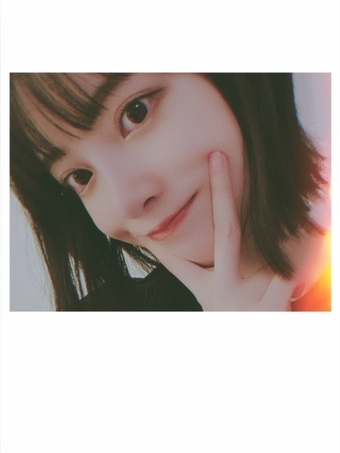
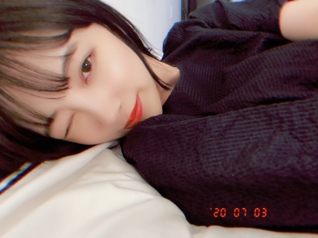
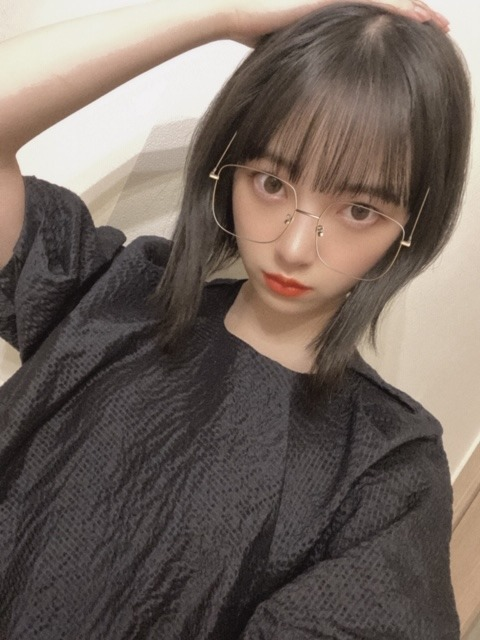
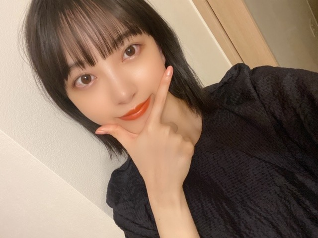

2020/0704Satシンプルる
こんばんは
堀未央奈です(^.^)
相変わらず歌詞を見ながら
曲を聞くのにハマっています
やはり好きなのは
YUIさんのwhy?という曲の
"どうして人は言葉を持ったのだろう？
心が見えにくくなる"という歌詞
心が見えるのも
心が見えないのも
言葉ないのも
言葉あるのも
どっちにしても難しいってこと
色々考えさせられますね、
RADWIMPSさんの猫じゃらしの
"この言葉ばかりに頼り切った日々が
名もない世界の鍵を閉めたんだ"
もすきだなぁ
みなさんの好きな歌の好きな歌詞はありますか？




無地の服がおおいです
シンプルです
何もかもシンプルがいいです
みなさんに質問
安定か挑戦
どちらが好きですか？
では(^.^)
2020/07/04 18:00


コメント(475)
こんばんは。 いつも
良い写真掲載ありがとうございます。
挑戦安定のご質問
まず「挑戦」について。
攻めることは大きなものを
得る事が出来る可能性がある一方で
いろいろリスクを伴う事も多いですよね。
日々きっちりやるべき努力をして、その時が来たら
挑戦・チャレンジするのがベストではないかと
個人的に感じます。
つぎに「安定」ですが「挑戦」の対義語としてならべると
現状維持的なマイナスイメージが浮かびますが
「安定を維持する」「守る」事にもやはり努力が必要だと
思います。
ですのでわたしはどっちの言葉も素敵だと思います。
※書き初めで「挑戦」は書いた事があるので
こんどはバーンと「安定」を書こうと思います
でもやっぱ 努力・感謝・笑顔も大事ですよねー！
応援しております！
どうして人は言葉を～の歌詞は
嘘をつかれて心が見えなくなるから
言葉なんて嫌い、という意味と、
それでもきちんと言葉で伝えてほしい、
そうしたら私はあなたの心が見えるから、
(あなたを信じられるから)
という２つの意味がある気がする
言葉も使う人次第っていうことなのかな
自分が好きな歌詞は
ミスチルさんのPADDLEという曲の
もしかしたら今日は何も起こんないかも
でも 明日へとパドリング
という所。
社会人になると毎日の仕事に追われて
夢や目標が見えにくくなって
何してるんだろう…
自分はこんなんでいいのかな…と思った時、
明日に向かって今をしっかり生きれば
それでもいいんだよ、と教えられた曲です
自分は安定と挑戦どっちも好きで、
交互に欲しいの！笑
挑戦して経験や力を身につけたら
安定の中で今度はそれを発揮していきたい
でも、どっちかといえば安定なのかな
挑戦は自分の為だけど、
安定して心に余裕がある時はきっと
周りの人の為に何かしてあげられる時だから
ブログ更新ありがとう!
今までの人生を振り返ると安定になるかな!
残りの人生の中で挑戦出来る事が少しでも多くあればとは思うよ!
毎日暑いけど体調には気を付けて頑張ってね!
またブログとモバメヨロシクね!
言葉が無くなったら本心がどうかなんて考えられなくなって「猫じゃらし」の歌詞みたく今一緒に居るかどうかだけが問題になるということなんですね。それはそれで「Why?」の歌詞の主人公の悩みは尽きないような気もしました。
歌詞が凄い曲だと「喝采」が浮かびました。夢見る過去と思い出にふける未来とそれらを歌う現在が想いを馳せ合ってる所や、曲自身が”恋の歌”と自己紹介してる所が、時間を閉じ込めた立体みたいで好きです。「プリデスティネーション」ってSF映画を思い出します。
堀さんを見習って挑戦を好きになりたいです。堀さんの挑戦が、ファンの応援があることで心を折らず支えられて安定したものになればいいって思います。
自分だけ見えるものと
大勢で見る世界の
どちらが嘘か選べばいい
君はどちらをゆく
僕は真ん中をゆく
この歌詞が、結構自分のテーマになってると思います。
二つ目の質問、難しいですね。挑戦も安定も必要で好きなので、中間ですかね。
生涯で一番好きな歌詞は、ハル・デイヴィッドの「Alfie」です。カーペンターズのClose to youを書いた人としても有名ですが、Alfieは1966年のイギリス映画の主題歌で、「生きるってどういうこと？」から始まる、素敵で深い歌詞なので、よかったら聞いてみてほしいです。
うしが好きな歌詞は
Stay the Ride Aliveの
『未来という時間は変えられるけど
記憶という時間は誰にも変えることは出来ない
心の中で響いてるその声 連れて行くから覚えてるまま
未来の果てまで』ですかね。
ここで『過去』ではなく『記憶』と表現しているのは
事実としての『過去』ではなく、
自分が歩んできた『記憶』。
つまり、他者がどれだけ違うと否定してきても
自分が信じて歩んできた『記憶』を変えなくて良いんだよ。
ということなのではないかと、うしは思っています。
(説明下手なのでちゃんと伝わっているか分かりませんが……。)
うしは安定が好きですが、たまには挑戦するのも
良いのではないでしょうか。
挑戦しなければ分からないこともあるでしょうから。
では、また何かあったらコメントさせて
いただきますね。m(_ _)m
しっかりと歌詞に意識して歌を聴くってことをあまりしてこなかったから、これからやってみるね！
質問のやつ！！
俺は安定してるのは好きだし、それが楽だなって思うけど、心の中では何事にも挑戦しなくちゃいけないってわかってる。でも、それがなかなかできないのが人間だよね。でも、そこで逃げないで挑戦することに向かうことが挑戦だと思うな。いっそこれを機に、なんか挑戦してみようと思う！！
なんか重いコメントになってしまったごめんなさい笑笑
てことで、大好きです笑笑
ばいばい
久々のコメントになります、すみませんm(_ _)m
ショートボブめちゃくちゃ似合います！
もちろんどんな髪型も似合うんですけど、個人的にショートの 未央奈ちゃんが1番好きですね！
僕が好きな曲の歌詞は乃木坂以外だったら、ワンオクのWherever you areっていう曲があるんですが、
「僕らが出会った日は2人にとって1番目の記念すべき日だね
そして今日という日は 2人にとって2番目の記念すべき日だね」という歌詞です！
これはやっぱ言ってみたいですねいつか笑
僕は正直安定がいいです。
でもまあ人生挑戦することが大事だと思うので、仕事でも自分の好きなことにも、何事にも挑戦していこうと思っています
未央奈ちゃん体調には気をつけて、これからも頑張ってね！
だけど素敵な明日を願っている
両方するのがいいんじゃないかな？
欲張りだから！
俺の好きな曲の歌詞はMrs.Greenappleの『ツキマシテハ』の
『はたから見れば幸せなあの子が、嘘で拭っているのも、だからか』
『はたから見れば不幸そうなあの子が、裕福なのも、だからか』
です
ツキマシテハは聴いていて凄く胸にグッとくる曲です ️
コーデ好き
安定に揺らぐけど、成長のためには挑戦が必要なのかも
今の俺には挑戦が必要かな！
明日もHAPPYを
お休みなさい(^-^ゞ
人生どんなにしても1度きりなので、様々な事に挑戦したいですね。
安定か挑戦
どちらが好きですか？といったら多分安定の方が好きですね
それは俺の性格のせいですかね
サッカーの選手だったのでゲームの流れをコントロールするとかが特に好き
なので安定感が好きです
歌詞を見ながら音楽を聴くと感化されて
自分も書いてみようって気になりませんか？
これほど世の中に歌が溢れているのに
みなさん個性を出されて素敵な歌詞を
書かれています。僕にもやれそうなんて
気にもなります。
昨晩、星を眺めようと外に出た所
月がとても綺麗に見えました。
見ていると吸い込まれそうなほど綺麗で
今だ！と思いスマホをポチポチ。
そこに残された言葉は日常では決して
使う事はないだろうという様なキザな
言葉ばかり。ふと我に帰りすべて
消してしまいました。
この恥ずかしさに耐えられる精神力も
必要なんだとしみじみと感じました。
僕には向いてない様です。
では。
私は安定を求めるよ。正直なところ、挑戦して周りからとやかく言われるのが嫌なのよ…。だから安定をとるかな。
好きな歌詞かー。思いつかないな。曲聞くときは歌詞より流れてる音楽の方が大事だからなー。
体調には気をつけてね。
安定も大事だけど…。
何事も挑戦して行きたい！
しかし、未央奈が美しくて尊い
お身体にお気をつけて
安定ですかねぇ〜
なんか変わってしまうと不安になりすぎてめちゃめちゃ怖いです
僕の好きな歌詞は乃木坂46曲なんですけど
次の次で降りるか？
そこに何もなくても構わない
そうだ 自分で 降りてみなくちゃ
違う景色は見られやしないさ
この歌詞です
何かに挑戦しないといけない時に元気くれます
早く会いたいです❤️
日々勉強❗
日々挑戦❗
自分は保守的な人間だって自覚あるけど、
新しいことやってみなきゃ視野広がらないし、知らないこと知らないままにするのももったいない❗
もちろん、変化しない＝安定ではないし、
周りの環境が変化していくなかで、変えない、変わらないことを選択するのも挑戦だと思う。
漫画からの抜粋だけど、
(天才って呼ばれる人の多くは)生まれながらに天才だと思われるけど、普通の人が1～10やろうとすることろを、それをいかに効率的に、濃密にやろうとするかを考える。10～1にしてみたり、そもそもA～Zで考えて実行してみるってことを繰り返してるから、成長に差が出る。
好奇心って大事よね❗
僕は安定が好きです！
堀さんはどっちが好きですか？
躊躇してた間に陽は沈む
遠くに見える鉄塔ぼやけてく
の部分が好きです。
聴くたびに一日一日大切にしないといけないと考えさせられます。
自分が乃木坂を好きになったきっかけは歌なので、早くライブで会えるようになるといいですね。
シンプルな服って着やすいし、可愛いし
最高だよね！未央奈ちゃんが着るとさらに
良さが強調されて素敵！
時には兵器にもなり得る言葉だけど未央奈ちゃんみたいに有効活用するば誰かを救う大事なものなんじゃないかなって思います！
スカウトマンの「言葉じゃなくてイメージすれば伝わるよ」
ここの歌詞本当に大好きです！！
ウインクもメガネも最高！
毎回可愛い写真を沢山載せてくれてありがとうございます!!!幸せです⸜❤︎⸝
安定も挑戦も大事だと思います！
きっと安定する方が難しいと思うけど、大事な事だしでも安定ばかりじゃつまらない!!!
どちらも平等に、自分で考えながら行動していくのが大切なことなんじゃないかなって思います！
本能に従って思い詰めすぎないで！
それをモットーに生きています！
だから私は、難しいけど、挑戦かな!?
今日も大好き、大好きです！！
私は挑戦ばっかりしてきたので、安定が欲しいですね笑
やっぱりシンプルが一番だよね～！
気候変動に気をつけて！
立ち上がる勇気を くれる あなた という
歌詞 が、染みるんです。
これだけ未央奈ちゃんの画像みたら、
また一週間頑張れそう！
自分は安定派かな？
毎日楽しく平穏無事に過ごせたらいいかなーって感じです！
ではでは
安定か挑戦、ファッションなら安定かな！
安定がつまらないとは全然思わないし、シンプルいずベストだと思う！
堀ちゃんみたいに素材が良ければなおさらだね。
ブログ更新ありがとうございます！
僕の好きな歌詞はYOASOBさんのあの夢をなぞってていう曲ででてくる歌詞「夜の中で君と2人たどり着いた未来で大丈夫想いはきっと大丈夫伝わるあの日の夢の先へ」です！お時間ある時是非聞いてみてください！
僕は挑戦です部活でハンドボールやってる時に何度も失敗してそれがいつか成功に近くので挑戦です！
ハンドボールも面白いです！お時間あるとき見ていただければ嬉しいです！
猫じゃらしめっちゃいいよねー！
私のおすすめはRADの です。 っていう曲だよー！
最後らへんの英語のところがとても気分が上がります！！
ぜひ聴いてみて！！！
これからも音楽の話いっぱいしてください！！
体調に気をつけて頑張ってね
僕の好きな曲の歌詞を紹介します。
『そうだ恐れないでみんなのために
愛と勇気だけが友達さ。』
素晴らしい歌詞だと個人的には思っているのです。
安定と挑戦ですか、、、
安定ですね。挑戦も時には大事ですが何事も安定に生きてたいですね笑
乃木坂の曲だと、帰り道は遠回りしたくなる。の歌詞で
『風のように 風のように 思うままに生きてみよう 過去がどんな眩しくても 未来はもっと眩しいかもしれない』の部分かな。
安定か挑戦だと安定の方がいいけど、時には挑戦も必要かな。
一度きりの人生だから、色々やってみたいな。
それなりに忘れられないことも どれくらい好きという感情も この目でみえたとしたら 色や形を見る事ができるのなら
ずっと大切にできただろうか ずっと近くにいれただろうか
という歌詞が染みる。 考えさせられます。
小椋佳作詞作曲「宇宙の掛け橋」（「銀河英雄伝説」第4期エンディング・テーマ、1996年）
君の哀しみは 君だけのものか
君の背負う孤独は 君の命かぎりか
確かに勝手に 産み落とされた命
意味も価値も 与えられない儘に
君の眼差しは 何処まで届いているか
雲の果てる地平か 星の消える宇宙か
確かに勝手に 楽しんでいい世界
欲に押され 突き進むのも自由
君の楽しみは 君だけのものか
君の抱く憧れは 君の命かぎりか
人とか呼ばれる 掛け替えのない命
君の後に 続く幼い姿
君の大部分 過去からの授かり物
自分と思う殆ど もらいものの塊
命と時代を 引き継ぐ未来人へ
君は何を 手渡すと言うのだろう
君の楽しみは 君だけのものか
君の抱く憧れは 君の命かぎりか
誰もが それぞれ 否応無しに主役
気づかないか 宇宙の掛け橋だと
君の一生は 宇宙の一瞬の粒
けれどその輝きは 全ての星に届く
時代の掛け橋 精一杯の命
虹の色を 超えて光り投げよう
「君の大部分過去からの授かりもの 自分と思う殆ど貰い物の塊」という歌詞は歴史を見ることで自分もその中にいることが理解出来、利己主義的傲慢さを戒めてくれます。「君の一生は宇宙の一瞬の粒 けれどその輝きはすべての星に届く」は人間の一生と星の命の膨大な長さの対比を見事に銀河英雄伝説のテーマとしても表出し、それでも発せられた光は何十億年かかっても全宇宙に届くのだという科学的事実と叙情性の不思議な一致を垣間見せてくれます。4分くらいの曲なのでぜひ探してみてください！そしてジブリを遥かに凌ぐスケールと数百人の魅力的な登場人物が織りなす宇宙戦乱絵巻に描かれる生と死が浮き彫りになる物語を小説なりアニメなりで味わってみてください！最高のフィクション体験になることを保障します！
ではお体に気をつけて頑張ってください！応援してます！
安定ならば何も不安が無くて安心できるかと思う
では
僕の好きな歌詞はあの夢をなぞってていう曲で「夜の中で君と2人辿り着いた未来で大丈夫想いはきっと伝わる」ていう歌詞です！
僕は挑戦です理由は部活でハンドボールの練習中に何度も失敗をくりかえしていつか成功するから僕は挑戦です！
これからも頑張ってください！応援してます！
(｡-_-｡)
コメントする